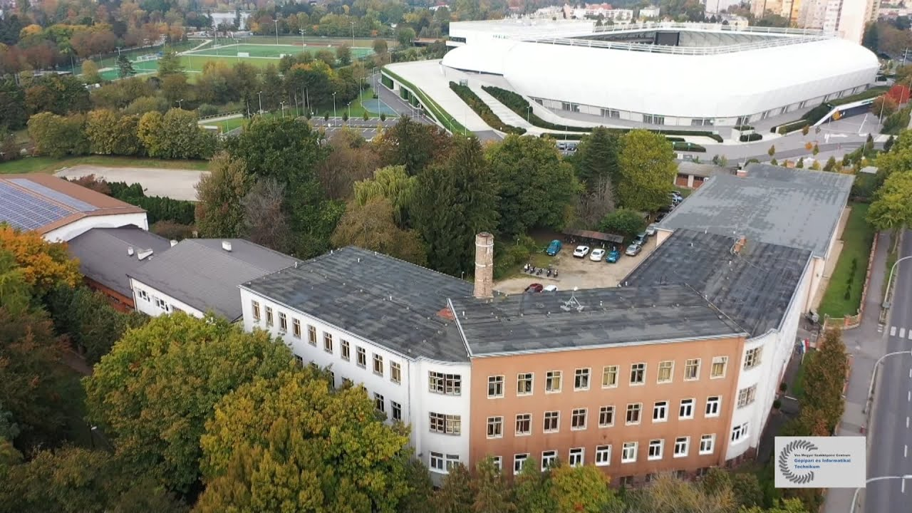

VVSzC Gépipari és Informatikai Technikum
A Vas Vármegyei Szakképzési Centrum Gépipari és Informatikai
Technikum Szombathely egyik legszínvonalasabb és legelismertebb szakképző intézménye.
Több mint hetven éve képez magas szinten műszaki szakembereket, az évtizedek során a térség egyik meghatározóbb technikumává vált.
Az iskola hagyományosan erős gépészeti alapokra épül, de az elmúlt évtizedekben fokozatosan bővült az informatika,
elektrotechnika és ipari automatizálás irányába, így ma már korszerű, a munkaerőpiaci igényekhez igazodó képzést nyújt.
A tanulók felszerelt tanműhelyben és laborokban sajátíthatják el a szakmai alapokat: elektronikai, villamosipari, gépészeti és informatikai tantermekben folyik az oktatás. Az intézmény kiemelt figyelmet fordít a gyakorlati képzésre, amelyet duális partnerekkel együttműködve biztosít. A gyakorlati órák és a vállalati környezetben eltöltött idő lehetőséget ad arra, hogy a tanulók valós ipari környezetben fejlesszék szakmai tudásukat.

De hogyan is kerültem én a Gépipariba?
Az általános iskola alatti éveimben nagyon szerettem különféle, kisebb, elemmel működő áramköröket
barkácsolni. Mindig boldogan és sikeresen éltem meg, amikor valami működőt létrehoztam. Az általános iskola
végefelé járva már egyre jobban kialakulóban volt, mi is érdekel igazán. 2020-ban beadtam a jelentkezést
a VVSzC Gépipari és Informatikai technikum több szakjára is. Végül a legjobban az Ipari Informatikai
technikus szakma fogott meg, mivel ennek a fő ágazata az elektronika és elektrotechnika, ami úgy valóban érdekelt. 2021- ben
megkezdődtek a középiskolai tanulmányaim. Az iskola első és második évében legfőképpen a szakma alapjait
sajátítottuk el.
A második évben részt vettünk a Mavir Zrt. által szervezett villamossági versenyen. A szakmai tanárunk kiváló felkészítésének köszönhetően, 3 fős csapatunkkal bejutottunk az országos döntőbe, ahol különdíjas értékelésben részesültünk. Ezen a versenyen szponzorunkként már megjelent a TDK Hungary Components Kft. A második év végén az addig megszerzett szakmai tananyagokból sikeres ágazati alapvizsgát tettem. Az iskola hátralévő éveiben a humán tantárgyakat az iskolában, míg a szakmai tárgyakat duális oktatás keretén belül Szombathely egyik legnagyobb vállalatánál, a Tdk-nál tanultam.